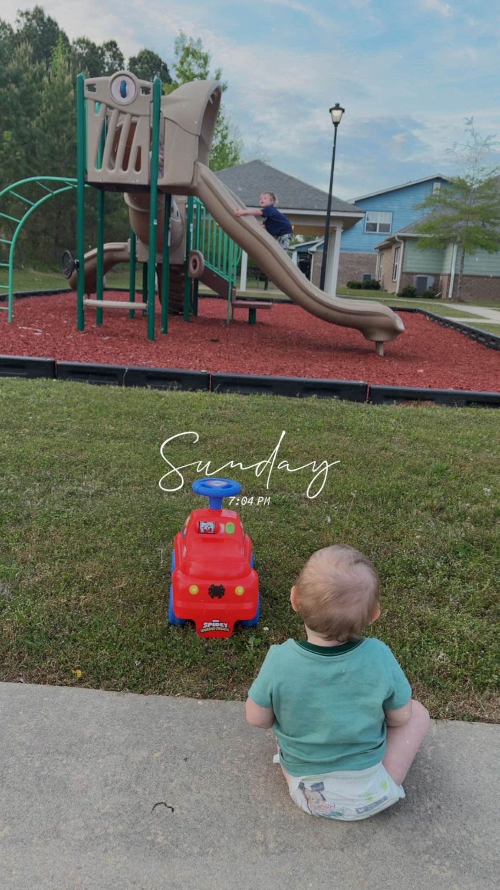

The Moment You Might Be Missing
April 2026

I was sitting on the edge of the sidewalk, watching my boys play. One was climbing higher than he probably should, and the other was completely content in his own little world, pushing a toy back and forth like it was the most important thing he had to do. It was one of those moments that should have felt full, and in a lot of ways it was, but I wasn’t.
My mind was already somewhere else, running through everything I hadn’t finished and everything waiting on me the second we got back in the car. I was physically there, but mentally already gone, and the more I sat there, the more I realized how normal that has become.
And I don’t think I’m the only one who lives like that.
We move from one thing to the next, filling our days with good things and necessary things, but somewhere along the way, our focus shifts. We don’t just have full lives—we become consumed by them. Our attention gets pulled toward everything that needs us, everything demanding our time, everything we feel responsible for, until the busyness itself becomes what we see most clearly.
And in doing that, we start focusing more on what’s filling our lives than on the One who fills them.
We tell ourselves we’ll slow down later, that we’ll be more present when things calm down, that we’ll finally take a real moment with God when life feels quieter, more intentional, more put together than this.
But what if that way of thinking is exactly what’s keeping us from seeing Him?
What if we’ve trained ourselves to look for God in the moments we can control, and in doing that, we’ve stopped recognizing Him in the ones we can’t?
Because sitting there, watching my boys, it hit me that nothing about that moment was lacking. It wasn’t too loud or too busy or too ordinary. The only thing missing was my awareness of what was already there.
Scripture doesn’t point us to a better place to find God; it reminds us that He is already present. “Do not I fill heaven and earth?” declares the Lord (Jeremiah 23:24, NIV). If He fills heaven and earth, then He is not absent from the middle of your day. He is not waiting for a quieter version of your life or a more meaningful moment to show up. He is present in the one you’re already living.
That changes the way we have to look at our lives.
Because the issue isn’t that your life is too full or too busy for God. The issue is how easily our attention is consumed by everything around us while we overlook the One who is present in it. We say we want to be close to Him, but we keep postponing it, convincing ourselves that connection will come later when we have more time, more focus, more space than we have right now. Meanwhile, we are standing in moments already filled with His presence and treating them like they don’t count.
Not because they aren’t sacred, but because they don’t feel like it.
So we rush past them, trading presence for productivity and awareness for distraction, always reaching for what’s next while missing what’s now. And then we wonder why God feels distant, when in reality nothing about His presence has changed.
God has never asked you to find Him in a better version of your life. He has asked you to recognize Him in the one you’re already living.
So before you move on to the next thing today, before you check the next box or shift your attention to whatever is coming next, take a second and actually look at your life as it is. Not the version you wish it was or the one you’re working toward, but the one you are standing in right now.
Because if He fills heaven and earth, then He is here too.
And maybe the most convicting part of all of this isn’t that God feels far, but that we’ve learned how to live as if He is. 🤍
Leave a thought 🤍
I’d love to hear what this stirred in you.